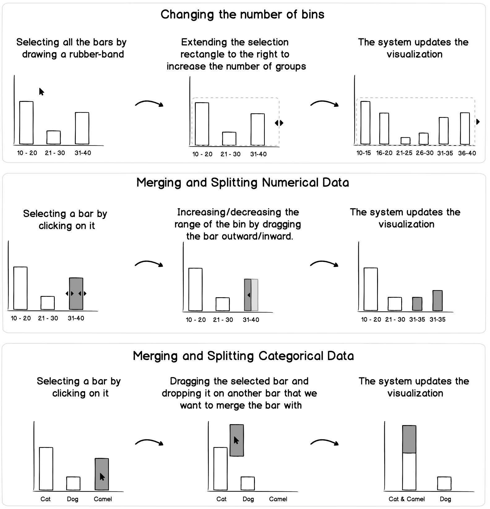
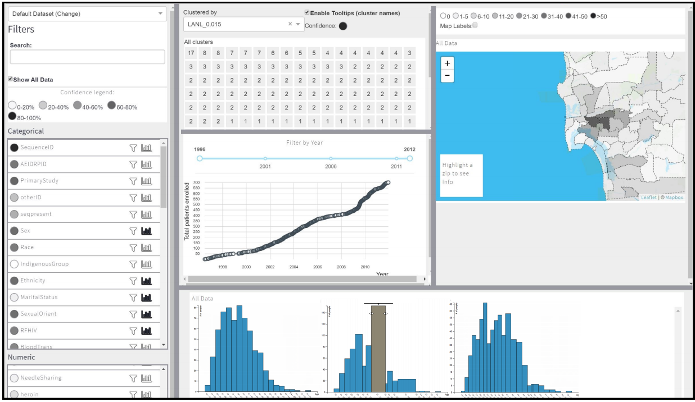

Empowering Health Data Analysis through Customizable Grouping
About
We worked with infectious diseases specialists at UC San Diego for 19 months to improve the process of adjusting data grouping criteria, which is a crucial operation in data visualization. Popular visualization tools offer automatic grouping of data, but further customization of grouping criteria can be challenging, often requiring multiple parameter adjustments. Our proposed solution, developed through collaboration with specialists, is now deployed and utilized by many specialists at UC San Diego Hospital.
My Role
As a UX specialist, I was mainly responsible for:
- 01. conducting interviews to identify users needs and challenges
- 02. designing and developing low and high-fidelity prototypes
- 03. planning and conducting contextual inqueries to test our proposed technique in a real setting
Duration
19 months
Team Size
6 People
...
Background
Our motivation for this work comes from a 19-month collaboration with infectious diseases specialists at the University of California San Diego. We are designing and building solutions to support exploratory analysis of HIV data. Researchers use multiple univariate distribution graphs to investigate demographic, social, clinical, and geographic factors impacting HIV transmission. Adjusting groupings is a highly iterative process using different tools and programming languages including R, SAS, and ArcGIS.
Infectious diseases specialists find the current interaction model for adjusting groupings cumbersome, time-consuming, and occasionally error-prone. Current tools require writing and executing scripts or going through multiple GUI widgets on a separate control panel. This process is frustrating for researchers who frequently update and adjust groupings according to their evolving interest in data.
...
UX Process
Keeping the end-users at the center of our design process, we worked closely with infectious disease specialists at the UC San Diego hospital for 19 months to design an innovative solution that was tailored to the user’s needs.
...
User Research
Identifying Users' Challenges and Needs
Taking a user-centered approach, we began the design process with a grounded investigation of our users and their current practices, needs, and challenges. We conducted interviews with four infectious diseases specialists in San Diego County who had several years of experience researching HIV transmission. We reached empirical saturation with four participants, and during our interview sessions, we asked a set of questions listed below.
-
What kinds of questions do they ask while exploring their data?
-
Why do they adjust data grouping criteria during their analysis?
-
How do they currently adjust data grouping criteria?
Then, we freely continued our conversation that touched upon the tools, analytic methods, and challenges they face during the process.
Competitor Analysis
We conducted competitor analysis alongside the interviews to investigate commercial data visualization tools' ability to adjust data grouping criteria. We excluded tools that did not support adjustment of data groupings from our initial list of nine. Using a series of questions, we analyzed the remaining tools to determine the minimum number of steps required to adjust data groupings and how the tools supported this feature. Our analysis revealed that existing tools enable users to adjust data groupings through programming or layers of menus on control panels. Tableau was found to require the fewest steps among the existing competitors.
| Tool/Language | Support | Support Method | Minimum Steps |
|---|---|---|---|
| SAS | Yes | Programming | 10-15 lines of code |
| ArcGIS | Yes | WIMP-based | 7 steps |
| R | Yes | Programming | 8-9 lines of code |
| Tableau | Yes | WIMP-based | 5 steps |
...
User Needs & Pain Points
We actively took notes during these interviews with infectious diseases specialists. We then read through our notes to obtain a general sense of the data and thinking about organization of the challenges these specialists encountered. After reading the notes, we identified the meaningful text segments and assigned a code word or phrase that accurately describes the meaning of the text segment (e.g,. “the large number of steps”). The coding process was an iterative process with three passes by two coders in which the coders developed and refined the codes.
As a result of this process, we found that these specialists currently use different set of tools and programming languages including R, SAS, ArcGIS, and Tableau. We also identified three challenges pertaining to data grouping adjustment:
Menus that adjust data groupings are spatially far from visualizations in the user interface
Some of the existing tools (e.g., ArcGIS) needed specialists to go through a series of menus that are spatially far from the main visualizations to adjust data groupings. Specialists found this model of interaction challenging because they had to constantly shift their attention from the visual features of interest when adjusting the groupings.
“I constantly need to move my eyes from one side of the screen to another. This is really bothering me since I have to constantly do it when changing the bins [adjusting data grouping criteria]”
A large number of steps required to carry out the interaction
A large number of operations required by existing tools slows down their exploration process.
“...[To change binning] I need to open the menu and manually enter the new age ranges. It’s kinda tedious. I wish to quickly combine patients in various early and late treatment groups...I have to write code and execute it. [...] another thing is that if I made a mistake like forgot a semicolon, I would only know when it’s done [i.e., after execution of code].”
Lack of fast and incremental feedback
Neither SAS nor ArcGIS provided incremental immediate feedback as they adjusted data grouping criteria.
“To verify that my changes were made successfully, I need to execute the code [in SAS] or press Ok button [in ArcGIS] first and then check the outcome. I wish there was a way to see the outcome as I was changing.”
...
Design
Based on the challenges raised by the infectious diseases specialists, we iteratively created different designs that would address the challenges. Among four design alternatives considered during our design process, two of the designs best met the challenges initially encountered by the researchers.
Low-fidelity Prototype
Our first design uses an in situ pop up to enable users to change the number of groups (first row) and merge and split numerical and categorical data (second and third rows). This design supports adjustment of grouping by enabling users to merge and split the groups interactively. As users adjust the grouping, the visualization will be updated to provide feedback.

In our second design, direct interaction with visualization eliminates the need for external menus and dialogues and completely removes the spatial offset between visualization and visual glyphs. It supports adjustment of grouping by enabling users to merge and split the groups interactively. Finally, this design provides immediate feedback as user manipulate the visual glyphs representing a group.
- 
In meetings with infectious diseases specialists, two designs for adjusting data grouping criteria were reviewed using paper prototypes. The first design was not seen as a considerable improvement compared to current tools, while the second design was well received as it required no additional menus or widgets. One specialist commented that the second design was "more organic and straightforward."
High-fidelity Prototype
As a next step, we created a high-fidelity prototype of the second design using JavaScript, HTML, CSS technologies.
...
Evaluation and Findings
The Avantgarde prototype was evaluated by conducting contextual inquiries with five infectious diseases specialists at the UC San Diego hospital. The participants were asked to use Avantgarde for 45 minutes to perform a data analysis session using the familiar HIV dataset while thinking aloud. The study concluded with a follow-up interview to gather feedback about the EMS technique.
Overall, all specialists who participated in this study found the EMS technique easy to use and effective in performing tasks related to adjustment of data grouping criteria. However, a few of them experienced difficulties in selecting very small and overlapping visual glyphs.
Consistency with user mental model
Participants found the design of merge and split interactions consistent with their mental model and expectations
“it feels natural and intuitive to drag the border to make the group larger and smaller. [...] this is what I would expect to happen.”
“breaking up the groups pulling them up is just like breaking the Lego pieces by pulling
them apart.”
Seamless and fluid interaction
Based on our observations during the study and participants feedback, the EMS technique supports less deviation from the analysis by reducing time and the number of steps required to adjust data grouping criteria
“here you can do it interactively and see the bar chart move over and immediately see you have successfully done it, but in SAS I have to create a new variable, specify what I want tocombine, and run it.”
Difficulty in selecting very small targets
Participants sometimes created bar charts and histograms with more than 20 groups (each bar represented a group). In bar charts/histograms with a large number of bars, the bars were relatively narrow and it was difficult for the participants to select a specific bar with a short height.
“I want to combine A1, A2 and A3, but it’s a bit tricky to get A1 because it’s tiny.”
...
Integration
After designing and testing our designs several times, we integrated our proposed technique to Avantgarde, a visual data analysis tool currently deployed and used by a significant number of infectious diseases specialists at the UC San Diego daily.
- 
...
Key Takeaways
Overall, we were very satisfied with the way this project turned out. We took the user-centered approach to design a novel interaction technique that enables infectious diseases specialists to adjust data grouping criteria easier. Moreover,
we were able to integrate our technique to Avantgarde, a visual data analysis tool currently deployed and used by a significant number of infectious diseases specialists at the UC San Diego hospital.
We also presented our technique at the IEEEVis conference (the premier forum for advances in visualization and visual analytics).